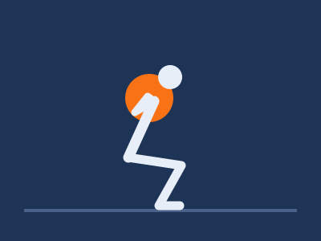

Приседания со штангой
Одно из главных упражнений для ног.
Ноги, штанга
Здесь можно записывать свои тренировки: какие упражнения сделал, сколько подходов и с каким весом. А потом смотреть, как растут результаты.
Загрузка погоды...

Одно из главных упражнений для ног.
Ноги, штанга

Базовое упражнение на грудь.
Грудь, штанга

Подъём штанги с пола.
Спина, штанга

Подтягивание тела к перекладине.
Спина, турник

Жим штанги над головой стоя.
Плечи, штанга

Статическое упражнение: держать тело ровной линией на предплечьях.
Пресс, без снаряжения